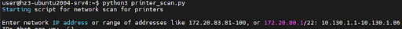

Обращение в техническую поддержку #
Для получения качественной и быстрой помощи в обращении необходимо указать: версии всех компонентов системы (Мониторинг, ПринтМененджера, клиента ПМ) и собрать логи.
Определение номера версии Мониторинга и ПринтМененджера #
В терминале сервера введите команды:
Определение версии клиента ПМ #
-
Перейдите в папку с клиентом ПМ : C:\Program Files\printum\printmanager_client\
-
Откройте свойства файла as_service.exe
-
Перейдите во вкладку “Подробно”. В графе “Версия файла” указана версия программы.

Работа с логами #
Для отправки понадобятся логи всех компонентов системы участвующих в проблеме.
Сбор логов Мониторинга и ПринтМененджера #
Сбор логов по запросу технической поддержки Принтум.
Для сбора логов по установленной системе введите команды, указанные ниже.
Если установлен Мониторинг и ПринтМенеджер или только Мониторинг: bash /opt/printum/logs.sh
Если установлен только ПринтМенеджер: bash /opt/printmanager/logs.sh
После запуска команды вы увидите процесс сбора логов, который завершится сообщением типа:
Логи успешно собраны и сохранены в /путь к папке/ALL_LOGS/logs-2023-12-06-17-14-44.tar.gz
Логи будут лежать в папке ALL_LOGS в архиве с датой и временем. При многократном запуске команды будут формироваться новые архивы.
В системе можно настроить логирование в Loki. Для этого обратитесь к разделу “Настройка логирования в Loki “
Сбор логов установки клиента ПМ #
При установке клиента ПринтМененджера создается три лога:
- install.log — в папке запуска команды.
- service_install_time_date.log — В папке C:\Program Files\printum\ .
- driver_install_time_date.log — В папке C:\Program Files\printum\
Сбор логов работы клиента ПМ #
-
Нажмите комбинацию клавиш Win+R и в появившемся окне введите “eventvwr”.
-
Откроется окно Просмотра событий. В левой боковой панели выберите “Журнал Windows”.
-
Выберите подраздел “Приложение”.
-
С зажатой клавишей shift выделите все записи с источником “Print Manager Client”.
-
Нажмите правую кнопку мыши, выберите “Копировать” и “Копировать сведения как текст”.
-
Вставьте скопированное в текстовый файл.